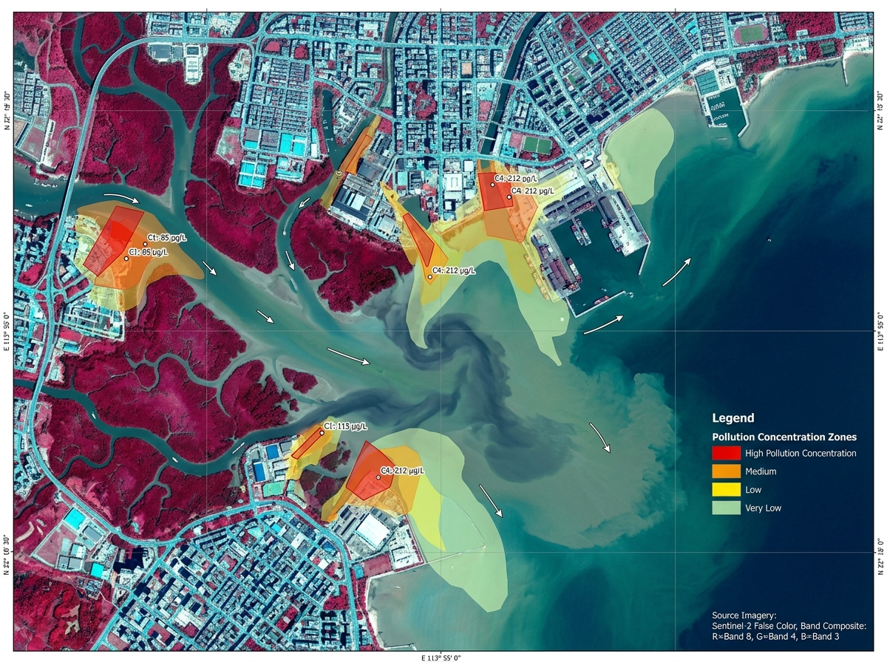

AI-Powered Environmental Intelligence for a Cleaner Mumbai Coast
Detect plastic pollution from imagery, predict drain-to-sea leakage hotspots, optimize cleanup routes, and protect the Arabian Sea coastline.
What does PlastiSense AI mean?
Plastic pollution in our environment
Sensing, understanding, and finding hotspots
Tools that help people detect, predict, and act
Turning environmental signals into clearer action for a cleaner coast.
Rising Coastal Plastic Pollution in Mumbai
Mumbai generates over 2,200 metric tonnes of plastic waste daily. During heavy monsoon spells, unsegregated single-use plastics from urban stormwater nullahs rush through Mithi River, Mahim Creek, and Irla Nullah straight into the Arabian Sea, devastating marine biodiversity and mangrove ecosystems.
PlastiSense AI Intelligence Engine
An end-to-end environmental platform combining deep learning computer vision, hydrological risk scoring, multispectral satellite remote sensing, and real-time municipal routing to intercept plastic before it enters open ocean waters.
How PlastiSense AI Works
From smartphone photos and satellite imagery to municipal cleanup dispatch.
Upload Image
Citizens, drones, or satellites capture coastal or drainage debris.
AI Detects Plastic
Computer vision identifies 14 categories, quantities, and coverage.
Risk Engine Scores
Hydrodynamic algorithms calculate marine leakage probability (0-100).
Map Pinpoints Hotspot
Interactive Mumbai cartography ranks priority zones and flow paths.
Cleanup & Recycling
Municipal squads deployed; polymers dispatched to certified MRFs.
Mumbai Beach Cleanup AI Verification
Inspect real environmental restoration results verified by PlastiSense AI algorithms.
Mumbai Environmental Intelligence Overview
Plastic Pollution Trends & Municipal Interception
Risk Level Distribution
Mumbai Ward NetworkPlastic Waste Categories (14-Polymer Engine)
Stormwater Drainage Load vs Coastal Wave Wash
Multi-Source Plastic Detection & Classification
Upload smartphone photos, drainage inspection imagery, or satellite tiles to classify 14 waste categories and compute pollution risk.
Upload Device Photo
Drag and drop JPG, PNG, or WEBP (Max 15MB)
Detection Intelligence
Pollution Risk:
CRITICALMarine Leakage Probability: 96%
| Waste Type | Qty | Conf | Recyclability | Action |
|---|
AI Environmental Explainability
Multispectral Coastal Remote Sensing & Change Detection
Analyze satellite imagery over Mumbai coast (Mahim Bay, Thane Creek, Mithi Delta) to observe floating plastic accumulation plumes.

Interactive Mumbai Coastal Pollution Cartography
Drain-to-Sea Leakage Simulator
Simulate how rainfall, drainage blockage, and Arabian Sea high tide propel plastic waste into Mumbai's coastline.
Simulation Parameters
Coastal Plastic Hotspot Rankings & Impact Trends
Algorithmic Hotspot Priority Ranking
| Priority | Hotspot Location | Ward | Risk Score | Est. Waste (kg) | Leakage Risk | Status | Action |
|---|
Polymer-Specific Recycling & Material Recovery Engine
Targeted segregation, processing protocols, and nearby Mumbai recovery facilities.
PET Water & Beverage Bottles
Wash, segregate blue caps, and forward to mechanical flaking for bottle-to-bottle pelletizing.
Low-Density Polyethylene Bags
Thermal agglomeration into plastic-bitumen additive for coastal road asphalt paving.
Ghost Fishing Nets (Nylon 6)
Chemical depolymerization into high-grade textile yarn (ECONYL). Prevents marine entanglement.
Thermocol / Expanded Polystyrene
Mechanical hydraulic densification. Releases toxic styrene monomer if incinerated!
Multilayer Food Wrappers
Co-processing with cement kilns in Gujarat as Refuse-Derived Fuel (RDF) alternative.
Rigid HDPE Containers
Shredding, washing, and extrusion into durable plastic pallets and municipal utility bins.
Municipal Action & Cleanup Command
Dispatch rapid response units, monitor trash skimmers, and sign off restoration completions.
Unique Innovation • Real-Time Environmental Impact Calculator
Estimate marine conservation gains based on volume of plastic waste removed.
Active Municipal Interception Tasks
Community Hotspot Verification Portal
Citizens report plastic accumulation; authorized officers and volunteers verify and upvote for rapid priority response.
Report New Coastal Hotspot
Verified Citizen Feed
Platform Security & Security Audit Log
Role-based access control, secure session management, and immutable audit logs.
Admin, Municipal Officer, and Community User permissions enforced.
All map & environmental keys stored securely server-side; rate limiting active.
Every cleanup dispatch, citizen report, and risk change recorded with IP hash.
System Security Audit Log
| Timestamp | Authenticated User | Action Performed | Source IP / Node | Authorization |
|---|
My Activity & Analysis History
A timestamped log of all scans, AI queries, hotspot visits, municipal actions, and simulation runs.
Loading activity history...
Forecast, Interventions & Verification
Modelled estimates are clearly labelled. AI services require configured provider credentials.
Plastic Leakage Forecast
Verified ward-level rainfall, tide and plastic-load feeds are not configured. Forecasts are withheld until those inputs are available.
What-If Plastic Intervention Simulator
All outputs are estimated scenario calculations, not measured environmental results. Baseline leakage and intervention efficiency are user-provided assumptions; intervention labels do not have type-specific performance models. No monetary benefit is reported without a verified valuation method.
Brand Audit
Submit a pollution image for configured vision-model analysis. Any detections are visual estimates, not proof of legal responsibility, and require verification for regulatory use.
Auto Verification
AI-assisted checks are not legal or official verification. Exact file matches are flagged as duplicates; perceptual-hash matches within 6 of 64 bits require human review and do not prove duplication. Final status remains pending human review.
Environmental technology, across disciplines
Role-based team capabilities; no individual identities or credentials are implied.